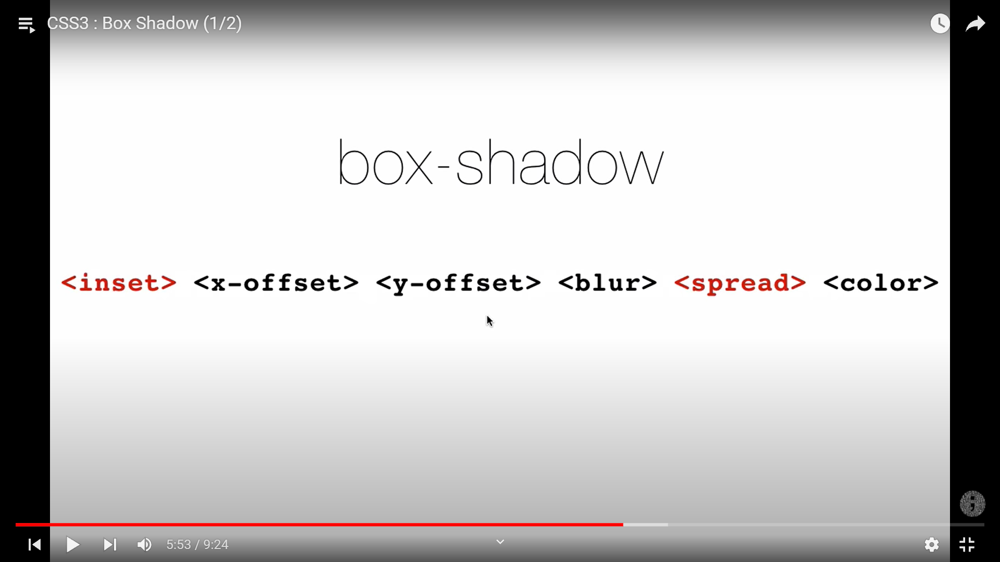
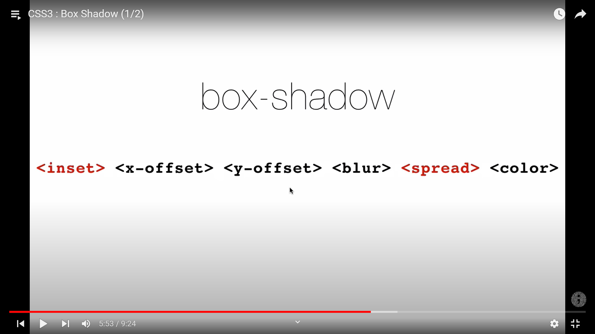
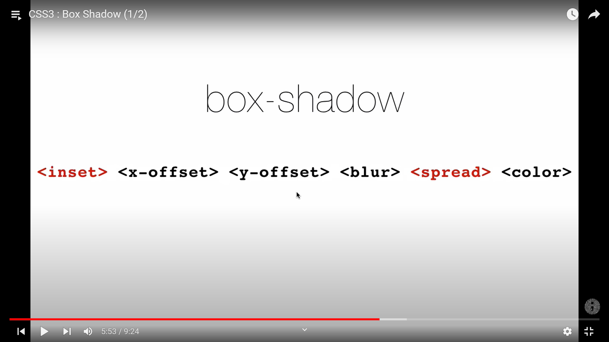
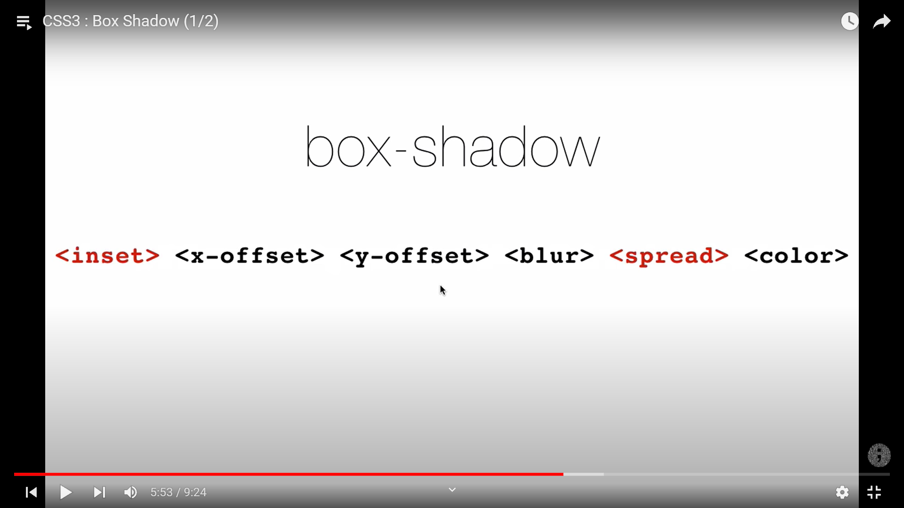

kalau mau shadow ada transparansinya; pakai rgba()
spread untuk elemen ukuran shadow tersebut
elemen inset untuk membuat shadow berada di dalam elemen
tinggal tambahkan koma di paling kanan dan sama template nya {x-offset> {y-offset> {blur> {color>, jika ingin tambahkan shadow lagi tinggal berikan koma di paling kanan lagi